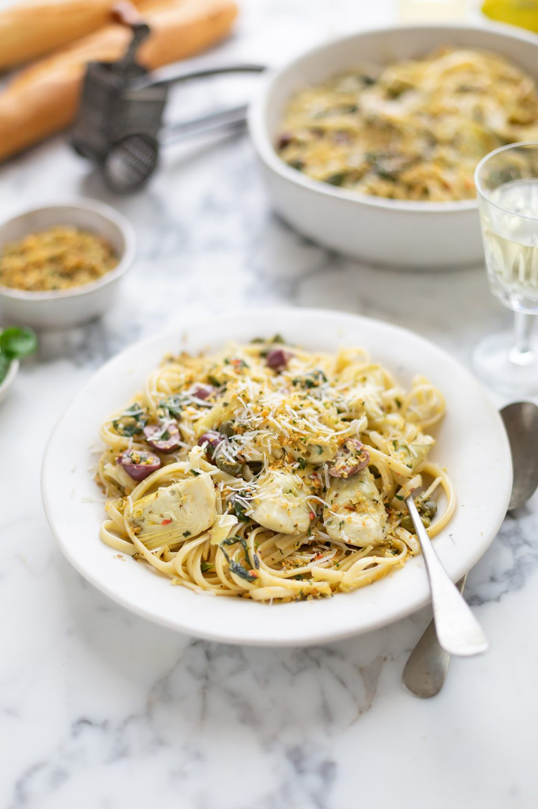

Go back
Pasta with artichokes, anchovies and capers

Description
Gennaro Contaldo’s ‘farfalle con carciofi’ is a celebration of artichokes,
married with sharp capers and anchovies. An easy, yet special pasta dish.
Original recipe
Ingredients
- 320g farfalle
- 8 small artichokes
- 2 lemons, juice only
- 6 tbsp extra virgin olive oil, plus extra for drizzling
- 8–12 anchovy fillets
- 2 banana shallots, finely chopped
- 75g capers
- 6 tbsp white wine
- sea salt and freshly ground black pepper
- handful finely chopped fresh parsley
- grated parmesan (or pecorino), to serve
Steps
-
Bring a large saucepan of salted water to the boil and cook the pasta
until al dente – check the packet instructions for the cooking time.
-
Meanwhile, clean the artichokes by removing all the leaves until you get
to the heart. Slice in half, and remove the hairy choke. Prepare a bowl
of water and pour the lemon juice in. Slice the hearts finely and place
in the bowl of water until you are ready to use.
-
Heat the olive oil in a frying pan, add the anchovies and fry over a
medium-high heat for about 2–3 minutes, or until crisp. Add the shallots
and fry for another minute. Drain the artichokes and add them to the
pan, then stir-fry for about 2 minutes until softened, but not mushy.
Add the capers, then add the white wine and simmer to allow some of it
to evaporate. Season with salt and pepper.
-
Drain the pasta, reserving a little of the cooking water. Add the pasta
to the sauce in the pan with a little of the reserved cooking water and
mix well to combine. Stir in the chopped parsley.
-
Remove from the heat, drizzle with a little extra virgin oil, and serve
with grated parmesan.